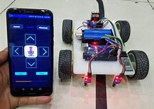
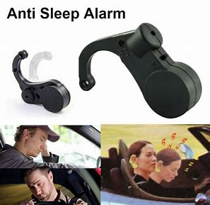

It can be detected by using sensors and it is followed by using arduino. It is used to supply medicines for the patients 24/7.
The tremendous increase in traffic day by day road accidents are increasing at a huge scale. Accidents due to driver drowsiness can be prevented using eye blink sensors. There are two main components here in this project. First is Arduino Nano which is the heart of the project. and second is the eye blink sensor. The driver has to wear the eye blink sensor frame throughout the course of driving and the eye blink has to be for some particular amount of seconds to detect drowsiness or sleep.Any random changes in steering movement lead to fatal accidents. But this project will avoid accidents.
